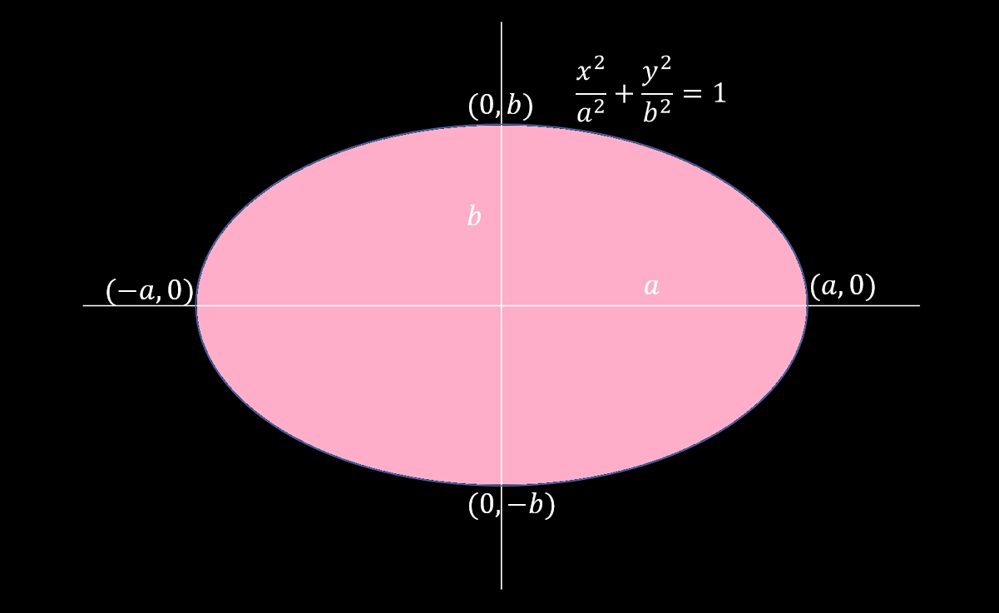
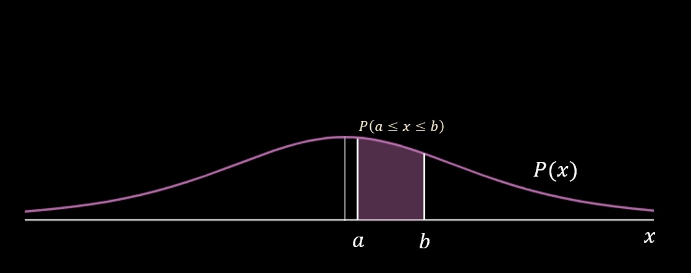
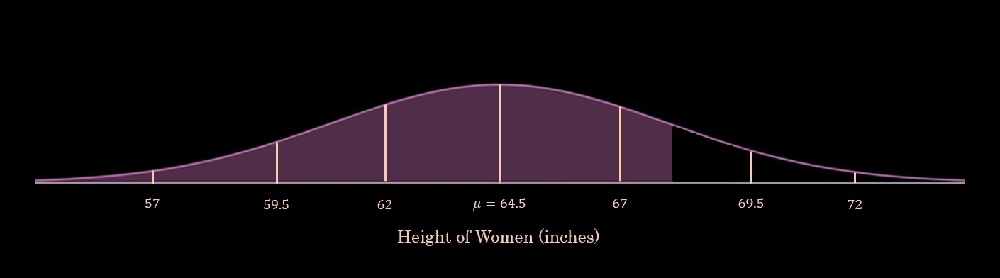
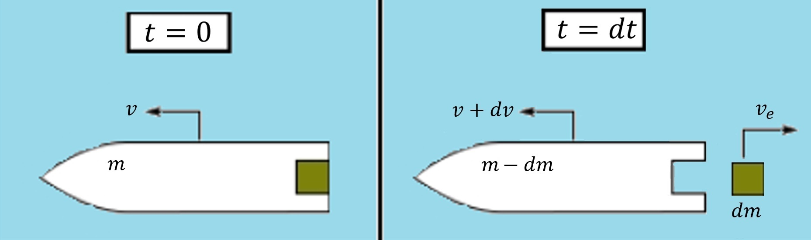

5.9 — Applications of Applications of Integrals
In this section we are going to be wrapping up this unit by looking at some applications of integrals. We will be deriving formulas from physics, chemistry, and elementary algebra.
Recall that the formula for an ellipse is \(\frac{x^2}{a^2} + \frac{y^2}{b^2} = 1\), where \(a\) and \(b\) are the corresponding radii of the ellipse.
We'll be finding an expression for \(y\) and then integrating that to find the region of one half of the ellipse. To obtain the area of the entire ellipse, we multiply the integral expression by \(2\).
$$ \frac{x^2}{a^2} + \frac{y^2}{b^2} = 1 \Rightarrow y = \pm b\sqrt{1 - \frac{x^2}{a^2}}$$
We only need the positive square root function, so we'll be using it for simplicity. This will only give us the area of half of the ellipse, however, so we need to multiply the integral expression by \(2\).
$$ 2\int_{-a}^{a} y \, dx = 2\int_{-a}^{a} b\sqrt{1 - \frac{x^2}{a^2}} \, dx $$
Because our function is symmetrical about the \(y\)-axis, we can rewrite this as:
$$ 4b\int_{0}^{a} \sqrt{1-\frac{x^2}{a^2}} \, dx $$
We want to get our integral in a form in which we can perform trigonometric substitution. To do this, we need to get it into the form \(\sqrt{a^2 - x^2}\) and perform the substitution \(x = a \sin{x}\) to rewrite the integrand without the radical.
$$ = 4b\int_{0}^{a} \sqrt{\frac{1}{a^2}(a^2-x^2)} \, dx = \frac{4b}{a}\int_{0}^{a} \sqrt{a^2-x^2} \, dx $$
$$ \mathrm{let} \, x = a\sin \theta $$
$$ dx = a\cos \theta \, d\theta $$
Now we'll be changing the bounds of integration:
$$ 0 = a\sin{\theta} \Rightarrow \theta = 0 $$
$$ a = a\sin{\theta} \Rightarrow \theta = \frac{\pi}{2} $$
$$ \frac{4b}{a}\int_{0}^{\frac{\pi}{2}}\sqrt{a^2 - (a\sin{\theta})^2} \, a\cos{\theta} \, d\theta = \frac{4b}{a}\int_{0}^{\frac{\pi}{2}}\sqrt{a^2 - a^2\sin^2{\theta}} \, a\cos{\theta} \, d\theta = 4b\int_{0}^{\frac{\pi}{2}} a\sqrt{1 - \sin^2{\theta}} \cos{\theta} \, d\theta = 4ab\int_{0}^{\frac{\pi}{2}} \cos^2{\theta} \, d\theta $$
The power reduction formula states that:
$$ \cos^2{\theta} = \frac{1}{2}(1 + \cos{2\theta}) $$
Plugging it in:
$$ 2ab\int_{0}^{\frac{\pi}{2}} (1 + \cos{2\theta}) \, d\theta = 2ab\Big[\theta + \frac{1}{2}\sin{2\theta}\Big]_{0}^{\frac{\pi}{2}} = 2ab\Big(\frac{\pi}{2}\Big) = ab\pi $$
The area of an ellipse is \(ab\pi\)!
This derivation features the formula for population growth, which is taught in most introductory algebra classes. We'll first be writing a differential equation to model the rate of change of the population. Let \(N\) denote the population and \(t\) represent the time.
The rate of change of the population is proportional to the current population at a given time \(t\). Let \(k\) denote the percent rate of growth of the population:
$$ \frac{dN}{dt} = kN $$
To solve this differential equation, we can separate the variables:
$$ \frac{1}{N} \, dN = k \, dt $$
Now integrating:
$$ \int \frac{1}{N} \, dN = \int k \, dt $$
$$ \ln{N} = kt + C $$
Now solving for \(N\):
$$ N = e^{kt + C} \Rightarrow N = Ce^{kt} $$
We'll rewrite the constant of integration as the initial value of the population at \(t = 0\):
$$ N = N_{0}e^{kt} $$
You may also see \(P\) used to denote the population. \(P\) is more commonly seen in introductory algebra classes, but \(N\) is more standard in ecology, statistics, and social sciences fields.
Probability density curves are an integral part of standardization, probability modeling, and statistical inference. A probability density function represents the distribution of potential values and outputs the likelihood that a continuous, random variable will take a certain value \(x\). Because we're working with probability, the area under any density function must equal \(1\), and the integral from \(a\) to \(b\) represents the probability that a certain value will fall between those bounds.
Let \(p(x)\) denote a probability density function for all real values \(x\):
$$ \int_{-\infty}^{\infty} p(x) \, dx = 1 $$
$$ P(a \leq x \leq b) = \int_{a}^{b} p(x) \, dx $$
A distribution is approximately Normal if there are no outliers or strong skewness. It is frequently referred to as a "bell curve" due to its relative symmetry about the mean. Normal distributions appear often in sampling distributions because of the Central Limit Theorem, which states that large quantities of sample data converge to have an approximately Normal distribution, namely when there are at least \(30\) samples. This theorem is important for statistical inference and analysis, as the probability density function for a Normal distribution is the Gaussian function:
$$ p(x) = \frac{1}{\sigma\sqrt{2\pi}}e^{-\frac{1}{2}(\frac{x-\mu}{\sigma})^2}, $$
where \(\mu\) denotes the mean of the distribution and \(\sigma\) denotes the standard deviation.
Notice that \(p\) is a function with the error function as its antiderivative, which is not elementary. Numerical approximations are often used to approximate the result, for which technology is strictly used for computations.
The cumulative density function is a function of area and is defined generally as:
$$C(x) = \int_{-\infty}^{x} p(t) \, dt $$
We can use cumulative density functions to locate percentiles. For example, the distribution of women's heights is approximately Normal with a mean of \(\mu = 64.5\) inches and a standard deviation of \(\sigma = 2.5 \) inches. I'm a girl who is 5'8". To find the percentile in which I lie, we need to find the area bounded below \(x = 68\):
I used a calculator to find that the area of the region is \(0.919\), which means that \(68\) inches is approximately in the \(92\)nd percentile.
$$ P(x \leq 68) = \int_{-\infty}^{68} \frac{1}{2(2.5)}e^{-\frac{1}{2}(\frac{x-64.5}{2.5})^2} \, dx = 0.919 $$
Probability density functions are also used in statistical inference to find evidence for or against specific hypotheses. If we obtain a value that significantly differs from the mean, we have convincing evidence that the mean may not be accurate. This mean is called the Null Hypothesis (\(H_0\)), and if we find convincing evidence against it, we are rejecting the null hypothesis. In scientific studies the common significance level is \(5\) percent (called the \(p\)-value), meaning that if we calculate that the probability of obtaining a value as extreme as or more extreme than our observed value is less than 5 percent, the value is significant. The primary methods for calculating a \(p\)-value include \(\chi^2\)-tests, \(t\)-tests, and \(z\)-tests, for which we compute the probability under their corresponding density functions.
In physics the Work-Energy Theorem is an important theorem that relates the kinetic energy of an object to the work done on it. It states that:
$$ W = \Delta K. $$
To derive it we should recall that:
$$ v = \frac{dx}{dt} \, \mathrm{and} \, a = \frac{dv}{dt} $$
$$ W = \int_{x_i}^{x_f} F \, dx $$
$$ F = ma \, $$
$$ \Delta K = \frac{1}{2}m(v_f^2 - v_0^2). $$
where \(x\) denotes position, \(v\) denotes velocity, \(v_i\) denotes initial speed, \(v_f\) denotes final speed, \(a\) denotes acceleration, \(m\) denotes mass, \(K\) denotes the kinetic energy, \(W\) denotes the net work done on the object, and \(F\) denotes the net force on the object. Using Newton's Second Law, plug in \(ma \, \)for \(F\):
$$ \int_{x_i}^{x_f}ma \, dx = m \int_{x_i}^{x_f} a \, dx = m\int_{x_i}^{x_f} \frac{dv}{dt} \, dx. $$
The chain rule states that:
$$ \frac{dv}{dt} = \frac{dv}{dx} \frac{dx}{dt}. $$
$$ m \int_{x_i}^{x_f} \frac{dv}{dt} \, dx= m \int_{x_i}^{x_f} \frac{dv}{dx} \frac{dx}{dt} \, dx = m \int_{x_i}^{x_f} \frac{dx}{dt} \, dv. $$
We change the bounds of integration because our new integrand is expressed in terms of \(v \, \):
$$ = m \int_{v_i}^{v_f} v \, dv = \frac{1}{2}m \Big[v^2\Big]_{v_i}^{v_f} = \underbrace{\frac{1}{2}m(v_f^2 - v_i^2)}_{\Delta \mathrm{K}} $$
$$ \therefore W = \int_{x_i}^{x_f} F \, dx = \frac{1}{2}m(v_f^2 - v_i^2) = {\Delta \mathrm{K}}. $$
Newton's Law of Universal Gravitation states that the force of attraction between any two objects in the universe is proportional to the masses of the two objects and inversely proportional to the square of the distance between them. The equation is given by:
$$ F = G\frac{m_1m_2}{r^2}, $$
where \(m_1\) and \(m_2\) represent the masses of the two objects, respectively, \(r\) is the distance between the objects, and \(G\) is the gravitational constant \(6.67 \times 10^{-11} \, \mathrm{m}^3 \, \mathrm{kg}^{-1} \, \mathrm{s}^{-2} \). Because the constant \(G\) is so small, we usually cannot see or feel the attraction between two everyday objects; however, the force of attraction between an everyday object and Earth is definitely noticable — in the form of gravity.
The law of conservation of energy states that energy can neither be created nor destroyed. We know that in a closed system, where matter does not transfer into or out of the system and only internal forces are doing work, the total mechanical energy of the system will be conserved. Recall that mechanical energy is made up of kinetic and potential energies, so we can say:
$$ \Delta \mathrm{ME} = \Delta K + \Delta U = 0 \Rightarrow \Delta U = -\Delta K. $$
But remember from the Work-Energy Theorem that \(\Delta K\) is the integral of force, which is equal to \(G\frac{m_1 m_2}{r^2}\) in this case. We will assume that the two objects in the closed system start infinitely far away from each other before being placed a distance \(r\) away from each other. Therefore:
$$ \Delta U = -\int_{r}^{\infty} G \frac{m_1 m_2}{\alpha^2} \, d\alpha. $$
Note that \(\alpha\) is simply a dummy variable. We can evaluate the improper integral by inserting a variable \(b\) as the upper bound and taking the limit as it approaches infinity:
$$ = - \lim_{b \to \infty} \int_{r}^{b} G \frac{m_1 m_2}{\alpha^2} \, d\alpha = - G m_1 m_2 \lim_{b \to \infty} \int_{r}^{b} \frac{1}{\alpha^2} \, d\alpha $$
$$ = G m_1 m_2 \lim_{b \to \infty} \Big[\frac{1}{\alpha}\Big]_{r}^{b} = G m_1 m_2(0 - \frac{1}{r}) $$
$$ = -G\frac{m_1 m_2}{r}. $$
This formula is applicable in finding the escape speed — the speed at which an object must travel to avoid the effect of gravity and therefore "escape" a planet. Remember from the conservation of energy equation that \(\Delta K + \Delta U = 0 \). Suppose that an object were launched into the air fast enough to escape Earth. Let \(v_e\) denote the escape speed, \(m\) denote the object's mass, \(M\) denote Earth's mass, and \(R\) denote Earth's radius. We know that there will be no kinetic energy at infinity because the speed will be \(0\), and we also know that the gravitational potential energy at infinity will be \(0\) because the object is separate from Earth. So plugging in gives:
$$ \frac{1}{2} mv_e^2 = G\frac{mM}{R} $$
$$ \frac{1}{2} v_e^2 = G\frac{M}{R} $$
$$ v_e = \sqrt{\frac{2GM}{R}} $$
SECOND LETTER FOR SCAVENGER HUNT—"U".
It is known that the mass of Earth is \(5.97 \times 10^{24} \, \mathrm{km} \) and that its radius is (assuming Earth is perfectly spherical) \(6357 \, \mathrm{km}\). Therefore,
$$ v_e = \sqrt{\frac{2(6.67 \times 10^{-11})(5.97 \times 10^{24})}{6.357 \times 10^6}} \approx 11200 \, \mathrm{m/s} = 25000 \, \mathrm{mph}.$$
The escape speed of Earth is roughly \(25,000\) miles per hour!
When a rocket accelerates, it releases exhaust — usually in the form of fuel — which decreases the mass of the rocket and thrusts it forward, thereby increasing its velocity. Let \(dm\) denote the small change in the rocket's mass \(m\), \(dv\) denote the small increase in the rocket's velocity from the thrust \(v\), and \(v_e\) denote the velocity of the debris released by the rocket.
The law of conservation of momentum states that the total momentum of a closed system, where no external forces act, remains constant. The symbol for momentum is denoted with \(P\), and we can state that:
$$ P_i = P_f, $$
where \(P_i\) denotes the momentum of the rocket before it releases the exhaust and \(P_f\) denotes the momentum of the system after the rocket releases the exhaust. We define momentum as the mass times velocity (\(mv\)). In this case we need to find the momenta of the individual components of the rocket-exhaust system. Before the rocket releases the exhaust, the system consists of just the rocket; after it releases the exhaust, the system consists of two objects — the accelerating rocket and the falling debris. At that moment the rocket has mass \((m - dm)\) and velocity \((v + dv)\), and the debris has mass \(dm\) and velocity \((v - v_e)\) (relative to the rocket). The combined momenta of these objects must equal the momentum of the rocket before it released the exhaust (by the law of conservation of momentum), so we can write:
$$ mv = (m - dm)(v + dv) + (v - v_e) \, dm $$
$$ mv = mv + m \, dv - v \, dm - dm \, dv + v \, dm - \, v_e \, dm $$
$$ m \, dv = dm \, dv - v_e \, dm. $$
The product \(dm \, dv\) is extremely small and is therefore negligible, so we then get:
$$ m \, dv = - v_e \, dm $$
$$ dv = - v_e \frac{1}{m} \, dm. $$
Integrating, we get:
$$ \int_{v_i}^{v_f} \, dv = - v_e \int_{m_i}^{m_f} \frac{1}{m} \, dm $$
$$ \Delta v = v_e \ln{\frac{m_i}{m_f}}, $$
which demonstrates that a rocket can accelerate itself by expelling part of its mass with high velocity.